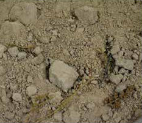
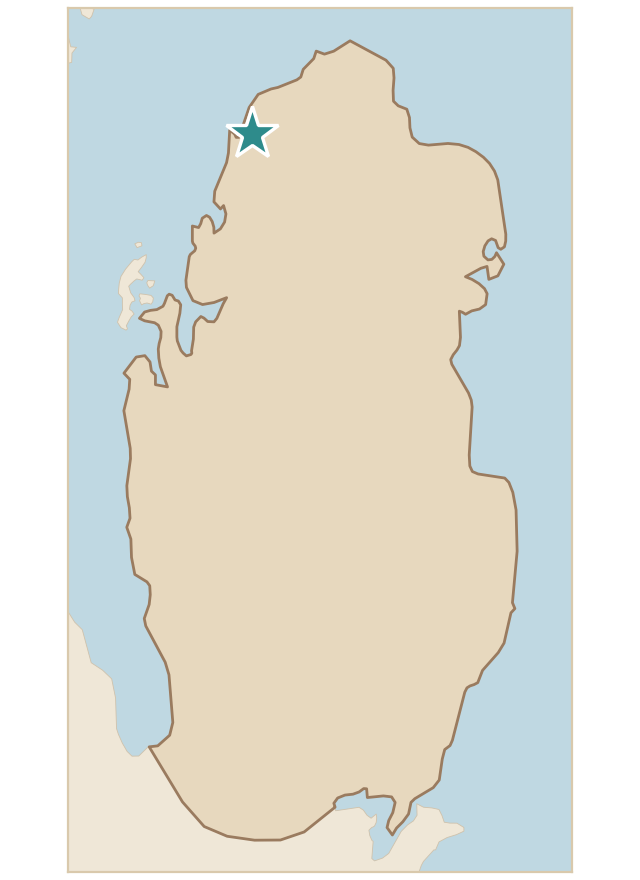

تربة رملية لزجة مشبعة بنسبة عالية جدًا من الأملاح لقربها من الشاطئ، وتحتوي على قطع صخرية متوسطة وصغيرة موزعة في تربة ناعمة، ولونها رمادي فاتح، مما يشير إلى تربة جيرية مختلطة بالطين، كما تحتوي على بقايا نباتات ملحية، مما يشير إلى بيئتها الرطبة وامتزاجها بمياه البحر.
Sticky sandy soil saturated with a very high proportion of salts because of its closeness to the shore. It contains medium and small rock pieces scattered in a fine soil, and is light grey, which indicates a calcareous soil mixed with clay. It also contains remains of salt-tolerant plants, which indicates its wet environment and its mixing with sea water.